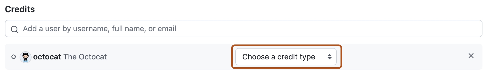

You can edit the metadata and description for a repository security advisory if you need to update details or correct errors.
Note
This article applies to repository-level security advisories in a public repository.
To edit a global advisory in the GitHub Advisory Database, see Editing security advisories in the GitHub Advisory Database.
You can also use the REST API to edit repository security advisories. For more information, see REST API endpoints for repository security advisories.
On GitHub, navigate to the main page of the repository.
Under the repository name, click the Security and quality tab. If you cannot see the " Security and quality" tab, select the dropdown menu, and then click Security and quality.
In the left sidebar, under "Reporting", click Advisories.
In the "Security Advisories" list, click the name of the security advisory you'd like to edit.
In the upper-right corner of the details for the security advisory, click Edit advisory. This will open the security advisory form in edit mode.
Use the CVE identifier dropdown menu to specify whether you already have a CVE identifier or plan to request one from GitHub later. If you have an existing CVE identifier, select I have an existing CVE identifier to display an Existing CVE field, and type the CVE identifier in the field. For more information, see About repository security advisories.
In the Description field, type a description of the security vulnerability including its impact, any patches or workarounds available, and any references.
Under "Affected products", define the ecosystem, package name, affected/patched versions, and vulnerable functions for the security vulnerability that this security advisory describes. If applicable, you can add multiple affected products to the same advisory by clicking Add another affected product.
For information about how to specify information on the form, including affected versions, see Best practices for writing repository security advisories.
Define the severity of the security vulnerability using the Severity dropdown menu. If you want to calculate a CVSS score, select Assess severity using CVSS and then select the appropriate values in the Calculator. GitHub calculates the score according to the Common Vulnerability Scoring System Calculator.
Under "Weaknesses", in the Common weakness enumerator field, type common weakness enumerators (CWEs) that describe the kinds of security weaknesses that this security advisory reports. For a full list of CWEs, see the Common Weakness Enumeration from MITRE.
Optionally, under "Credits", remove existing credits, or use the search box to find additional people you want to credit on the security advisory, then click their username to add them.
Use the dropdown menu next to the name of the person you're crediting to assign a credit type. For more information about credit types, see Creating a repository security advisory.

Optionally, to remove someone, click the next to the credit type.
Click Update security advisory.
The people listed in the "Credits" section will receive an email or web notification inviting them to accept credit. If a person accepts, their username will be publicly visible once the security advisory is published.